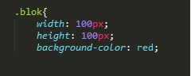
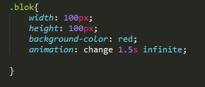
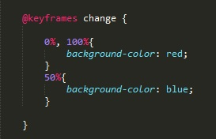

Анимация
Для анимации объектов используется свойство - animation
Анимировать можно практически все свойства элементов.
Каждая анимация должна быть определена с помощью правила keyframes. keyframes позволяет производить изменения постоянно и автоматически, а не только в ответ на события мыши
У свойства animation есть несколько атрибутов. рассмотрим основные:
- Название правила - назввание придумываем сами. Само правило пишется отдельно с помощью тега @keyframes
- длительность - за какой промежуток времени анимация должна проходить. указывается в секундах
- infenite - анимация будет повторяться постоянно
- linear - анимация будет происходить линейно, без скачков и урывков, плавно
Рассмотрим пример:
Допустим у нас есть блок div
<div class="blok"></div>
Далее в стиляx пропишим его высоту и ширину, а так же укажем фон - красным цветом.

Теперь добавим к нашему блоку свойтво animation и пропишем там три атрибута.
- change - имя нашего правила
- 1.5s - время выполнения анимации
- повторение - infinite

Теперь создадим наше правило. Выглядить оно будет вот так:

Разберем атрибуты
- @keyframes - оператор CSS указывающий что объявляется правило
- change - Имя нашего правила
- 0%, 100% - это периоды анимации. т.е. 0% - это начало анимации, а 100% - это конец. в фигурных скобках указывается что должно происходить во время анимации. в нашем случае начинаться и заканчиваться анимация должна тем что у блока выставляется цвет фона - красный
- 50% - середина нашей анимации. в этот момент фоновый цвет меняется на синий.
В итоге наш квадрат меняет постоянно цвет